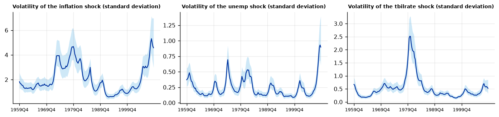
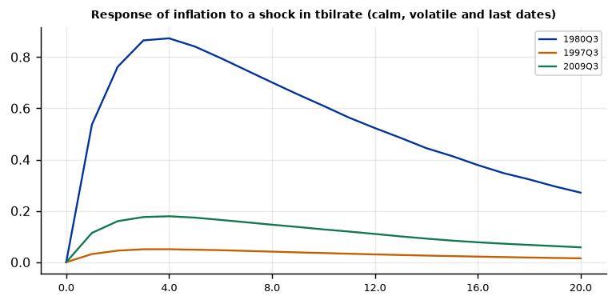
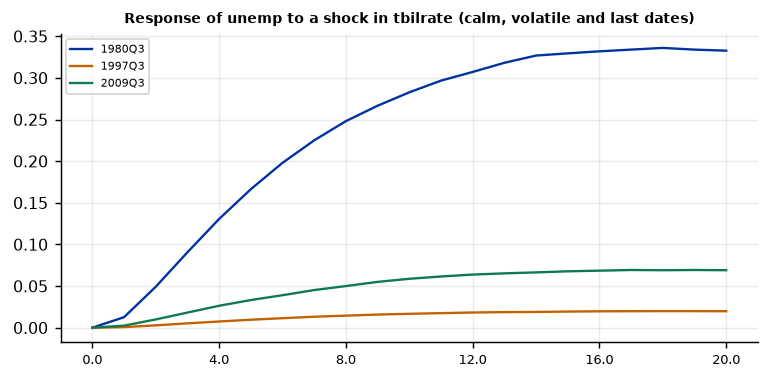

Run this model on your own data in Open Econometric Systems →
Step 1The question and the model
Were the shocks of the 1970s larger than those of the 1990s, and does it matter for inference? The model is a VAR with constant coefficients and time-varying shock variances:
where \(H_t = \text{diag}(h_{1t}, h_{2t}, h_{3t})\) holds the variances of the three structural (Cholesky) shocks and \(A_0\) is a lower-triangular matrix of contemporaneous relations (Cogley and Sargent 2005). The log-variances follow random walks: volatility can rise or fall gradually, but cannot jump back. The coefficients get the Minnesota prior of the BVAR guide.
The model is estimated by Gibbs sampling, drawing the log-variances with the mixture-of-normals approximation of Kim, Shephard and Chib (1998). The parameter \(s_i\), the variance of the innovation to the log-volatility, controls how fast volatility moves.
Volatility or coefficients?
Changing volatility and changing coefficients are hard to tell apart, and a model that allows only one of them will attribute all the instability to it. Sims and Zha (2006) found that most of the apparent change in U.S. monetary policy since the 1960s was a change in the size of the shocks. The TVP-VAR guide allows time-varying coefficients with constant variance; this guide allows time-varying variance with constant coefficients. Compare them, and if both matter, use a TVP-SV-VAR (not in OES).
How to write it: the model
We estimate a VAR with stochastic volatility (Cogley and Sargent 2005) in inflation, unemployment and the three-month Treasury bill rate, with two lags. The VAR coefficients are constant, with a Minnesota prior with overall tightness 0.1; the structural shocks, identified recursively with the interest rate ordered last, have volatilities that follow independent random walks in logs. The posterior is simulated with a Gibbs sampler in which the log-volatilities are drawn using the mixture approximation of Kim, Shephard and Chib (1998); we use 4,000 draws after 2,000 burn-in.
Step 2Load the data and test for unit roots
import numpy as np
import pandas as pd
import oes_engine as oes # pip install -e open-econometric-systems/oes-engine
data = open("us_macro.csv").read()
df = pd.read_csv("us_macro.csv")
vars_ = ["inflation", "unemp", "tbilrate"]
spec = dict(vars=vars_, time="date", lags=2, lambda1=0.1, delta="0, 1, 1", draws=4000, burn=2000)
r = oes.run("svvar", data, spec)
oes.show(r, "Unit-root")Unit-root tests
ADF level, constant: p ADF level, trend: p ADF first difference: p KPSS level: p Conclusion
Variable
inflation 0.0271 0.0822 0.0000 0.0808 I(0)
unemp 0.1107 0.3084 0.0008 0.1000 I(1)
tbilrate 0.2805 0.4462 0.0000 0.0538 I(1)
Note: ADF H0: unit root; KPSS H0: stationary (p-values are truncated at 0.01 and 0.10). For a Minnesota-type prior use a prior mean of 1 on the own first lag for I(1) variables in levels (random walk) and 0 for stationary variables. A VAR in levels with a random-walk prior remains valid when the variables are I(1) or cointegrated (Sims, Stock and Watson 1990).How to read it
Inflation rejects a unit root (p = 0.03); unemployment and the T-bill rate do not (p = 0.11 and 0.28), so they get a random-walk prior on their own first lag (delta = "0, 1, 1"). The VAR is in levels, as in the BVAR guide.
Step 3Estimate
oes.summary(r)
oes.show(r, "Equation: tbilrate")
oes.show(r, "Variance of the log")Observations: 200
Lags: 2
Draws: 4000
Last volatility: inflation: 4.5788
Last volatility: unemp: 0.8971
Last volatility: tbilrate: 0.5236
Equation: tbilrate
Mean Std. dev. 2.5% Median 97.5% P(> 0)
Parameter
const 0.4896 0.1730 0.1412 0.4887 0.8285 0.998
L1.inflation 0.0139 0.0116 -0.0081 0.0140 0.0370 0.883
L1.unemp -0.0739 0.0667 -0.2050 -0.0746 0.0563 0.136
L1.tbilrate 1.0319 0.0429 0.9454 1.0325 1.1156 1.000
L2.inflation 0.0078 0.0078 -0.0075 0.0078 0.0227 0.839
L2.unemp 0.0389 0.0651 -0.0867 0.0390 0.1646 0.733
L2.tbilrate -0.1026 0.0398 -0.1801 -0.1035 -0.0241 0.005
Variance of the log-volatility innovations
Mean Std. dev. 2.5% Median 97.5% P(> 0)
Parameter
s[inflation] 0.1993 0.0847 0.0813 0.1845 0.4185 1.0
s[unemp] 0.3789 0.1267 0.1707 0.3624 0.6727 1.0
s[tbilrate] 0.2264 0.0776 0.1070 0.2138 0.4135 1.0How to read it
The coefficients are constant, so the interest-rate equation is read as in the BVAR guide: the policy rate is persistent (own lags 1.03 and \(-0.10\), sum 0.93) and responds to inflation with a positive sign (probability 0.88 for the first lag, with an interval that includes zero). The new objects are the \(s_i\), the variances of the quarterly innovations in log volatility: 0.20 for inflation, 0.38 for unemployment and 0.23 for the interest rate, all clearly above zero (the 95% intervals start at 0.08, 0.17 and 0.11). A value of 0.2 means that the log-variance of a shock moves by about 0.45 per quarter, so its standard deviation by about 22%. Unemployment shocks have the most erratic volatility. If an \(s_i\) had been close to zero, that shock would have constant variance and the model would reduce to the ordinary BVAR for it.
Step 4How did volatility change?
oes.plot(r, "Volatility of", ncols=3, size=(3.6, 2.6))
oes.show(r, "Shock volatility")
sd = {c["title"].split(" of the ")[1].split(" shock")[0]: pd.Series(c["series"][0]["y"], index=c["x"]) for c in r["charts"] if c["title"].startswith("Volatility of")}
sd = pd.DataFrame(sd)
year = sd.index.str[:4].astype(int)
per = pd.DataFrame({"1960-1983": sd[(year <= 1983)].mean(), "1984-2006": sd[(year >= 1984) & (year <= 2006)].mean(), "2007-2009": sd[year >= 2007].mean()}).T
print(per.round(2))
print("ratio 1984-2006 / 1960-1983:", (per.loc["1984-2006"] / per.loc["1960-1983"]).round(2).to_dict())Shock volatility over the sample (posterior median s.d.)
Minimum Date Maximum Date Last
Variable
inflation 0.6005 1993Q1 5.3173 2008Q4 4.5788
unemp 0.0867 1999Q2 0.9315 2009Q2 0.8971
tbilrate 0.1514 1997Q3 2.5160 1980Q3 0.5236
inflation unemp tbilrate
1960-1983 2.41 0.27 0.69
1984-2006 1.41 0.16 0.34
2007-2009 4.17 0.54 0.57
ratio 1984-2006 / 1960-1983: {'inflation': 0.58, 'unemp': 0.6, 'tbilrate': 0.5}
How to read it
The charts show the posterior median standard deviation of each structural shock. The table gives the minimum, the maximum and the last value. The interest-rate shock is largest in 1980Q3 (2.5 percentage points, the Volcker period) and smallest in 1997Q3 (0.15): a 17-fold range. Inflation shocks are smallest in 1993Q1 (0.6) and largest in 2008Q4 (5.3), the collapse of prices at the start of the financial crisis. Unemployment shocks range from 0.09 (1999Q2) to 0.93 (2009Q2).
The period averages show the Great Moderation: from 1960–1983 to 1984–2006 the volatility of inflation fell by 42%, that of unemployment by 40% and that of the interest rate by 50%, and it rose again in 2007–2009 (inflation shocks 4.2, above the 1960–1983 average of 2.4). Say how you chose the break at 1984 (it is the convention, not an estimate), and note that the table shows posterior medians without bands.
Step 5Is the volatility model needed? Compare with constant variance
oes.show(r, "Diagnostics of the standardised")
rc = oes.run("bvar", data, dict(vars=vars_, time="date", lags=2, prior="nw", lambda1=0.1, delta="0, 1, 1"))
oes.show(rc, "Residual diagnostics")Diagnostics of the standardised structural shocks
Statistic p-value Detail
Test
Portmanteau (Hosking), 12 lags 256.3691 0.0000 df = 108; H0: no residual autocorrelation (approximate after estimating lags)
Ljung-Box, shock inflation 59.2243 0.0000 H0: no autocorrelation
Jarque-Bera, shock inflation 4.2770 0.1178 H0: normal residuals
ARCH LM, shock inflation 2.1071 0.7161 H0: no conditional heteroskedasticity
Ljung-Box, shock unemp 46.4842 0.0000 H0: no autocorrelation
Jarque-Bera, shock unemp 7.5828 0.0226 H0: normal residuals
ARCH LM, shock unemp 4.2702 0.3707 H0: no conditional heteroskedasticity
Ljung-Box, shock tbilrate 14.3963 0.2761 H0: no autocorrelation
Jarque-Bera, shock tbilrate 6.3191 0.0424 H0: normal residuals
ARCH LM, shock tbilrate 6.2427 0.1817 H0: no conditional heteroskedasticity
Note: Shocks divided by their estimated volatility should be white noise and close to normal if the volatility model fits; compare with a constant-volatility VAR, where ARCH tests usually reject.
Residual diagnostics (at the posterior mean)
Statistic p-value Detail
Test
Portmanteau (Hosking), 12 lags 256.5220 0.0000 df = 108; H0: no residual autocorrelation (approximate after estimating lags)
Ljung-Box, inflation 51.0310 0.0000 H0: no autocorrelation
Jarque-Bera, inflation 57.4347 0.0000 H0: normal residuals
ARCH LM, inflation 23.0871 0.0001 H0: no conditional heteroskedasticity
Ljung-Box, unemp 65.0997 0.0000 H0: no autocorrelation
Jarque-Bera, unemp 151.4370 0.0000 H0: normal residuals
ARCH LM, unemp 40.6066 0.0000 H0: no conditional heteroskedasticity
Ljung-Box, tbilrate 48.4647 0.0000 H0: no autocorrelation
Jarque-Bera, tbilrate 1651.9622 0.0000 H0: normal residuals
ARCH LM, tbilrate 57.1218 0.0000 H0: no conditional heteroskedasticityHow to read it
If the volatility model is right, the shocks divided by their estimated volatility should be white noise with no ARCH. They are: the ARCH test does not reject for any of the three standardised shocks (p = 0.72, 0.37 and 0.18), while in the constant-variance BVAR it rejects for all (p below 0.0001). The heavy tails also disappear: the Jarque-Bera statistic of the interest-rate residual falls from 1,652 to 6.3, and normality is not rejected for the inflation shock (p = 0.12). Volatility changes, not fat-tailed shocks, explain most of the non-normality.
What the volatility model does not fix is serial correlation: the Ljung-Box test still rejects for the standardised inflation and unemployment shocks (statistics 59 and 46), as in the constant-variance VAR. That is a problem with the conditional mean, and the remedy is more lags (Step 8). Report both tables: the contrast is the argument for the SV-VAR.
Step 6Impulse responses in calm and volatile periods
oes.plot(r, "Response of inflation to a shock in tbilrate", ncols=1, size=(6, 3))
oes.plot(r, "Response of unemp to a shock in tbilrate", ncols=1, size=(6, 3))

How to read it
The charts show the response of inflation and unemployment to an interest-rate shock at three dates: the volatile 1980Q3, the calm 1997Q3 and the last date. With constant coefficients the responses have the same shape at every date, and differ only in the size of a one-standard-deviation shock: after a year inflation rises by 0.87 in 1980Q3 and by 0.05 in 1997Q3, a ratio of 17, which is the ratio of the shock sizes (2.5 and 0.15). Per percentage point of policy shock, both are about 0.35. Do not read the difference as a change in monetary transmission: it is a change in the size of the shock. Report responses to a shock of fixed size (such as 25 basis points) or normalise them, as the BVAR guide does. This is the key contrast with the TVP-VAR, where the responses change shape because the coefficients change. As in the BVAR guide, inflation rises after the shock (the price puzzle).
Step 7Convergence
oes.show(r, "MCMC")MCMC convergence diagnostics
Effective sample size Efficiency (ESS / draws) Geweke z p-value
Parameter
tbilrate: const 1483.0 0.371 1.258 0.2085
inflation: L1.inflation 2161.0 0.540 0.132 0.8948
unemp: L1.unemp 1426.0 0.357 -0.723 0.4696
inflation: L1.tbilrate 2965.0 0.741 -0.162 0.8713
tbilrate: L1.tbilrate 2277.0 0.569 1.005 0.3150
inflation: L2.inflation 2446.0 0.611 0.544 0.5868
unemp: L2.unemp 1402.0 0.351 0.962 0.3361
unemp: L2.tbilrate 4000.0 1.000 0.791 0.4291
tbilrate: L2.tbilrate 2090.0 0.523 -2.146 0.0318
s[inflation] 155.0 0.039 0.382 0.7028
s[unemp] 125.0 0.031 1.887 0.0591
s[tbilrate] 187.0 0.047 -0.468 0.6401
Note: Geweke compares the first 10% with the last 50% of the chain: |z| > 1.96 suggests the chain has not settled; run more draws or a longer burn-in. ESS above about 200 gives reliable posterior means and bands. Lowest efficiency: 0.031.How to read it
For the VAR coefficients the effective sample sizes are above 1,400 (efficiency of 35% to 100%) and the Geweke statistics are below 2 in absolute value except one (the second T-bill lag in the interest-rate equation, \(-2.1\)), unremarkable among many parameters. The variances \(s_i\) of the volatility innovations mix more slowly: effective sample sizes of 125 to 187 (efficiency of 3% to 5%), below the guideline of 200, though their Geweke statistics are fine (up to 1.9). For a paper, use 10,000 draws or more and check that the volatility paths do not change.
Step 8Robustness: lags, tightness and the amount of volatility drift
def per_ratio(res):
s = {c["title"].split(" of the ")[1].split(" shock")[0]: pd.Series(c["series"][0]["y"], index=c["x"]) for c in res["charts"] if c["title"].startswith("Volatility of")}
s = pd.DataFrame(s); y = s.index.str[:4].astype(int)
return (s[(y >= 1984) & (y <= 2006)].mean() / s[y <= 1983].mean()).round(2)
rows = {"baseline (2 lags, lambda1 = 0.1)": per_ratio(r)}
for lg in (1, 4):
rows[f"{lg} lag(s)"] = per_ratio(oes.run("svvar", data, dict(spec, lags=lg, draws=2000, burn=1000)))
for lam in (0.05, 0.3):
rows[f"lambda1 = {lam}"] = per_ratio(oes.run("svvar", data, dict(spec, lambda1=lam, draws=2000, burn=1000)))
print(pd.DataFrame(rows).T)inflation unemp tbilrate baseline (2 lags, lambda1 = 0.1) 0.58 0.60 0.50 1 lag(s) 0.56 0.58 0.51 4 lag(s) 0.60 0.60 0.48 lambda1 = 0.05 0.48 0.58 0.52 lambda1 = 0.3 0.68 0.65 0.47
How to read it
Each row is a variant of the model, and each number the ratio of average volatility in 1984–2006 to that in 1960–1983 (below one means the Great Moderation). With one, two or four lags the ratios are 0.56 to 0.60 for inflation, 0.58 to 0.60 for unemployment and 0.48 to 0.51 for the interest rate. A tighter prior (\(\lambda_1 = 0.05\)) gives 0.48 for inflation, a looser one (\(\lambda_1 = 0.3\)) 0.68; the interest-rate ratio is stable at about 0.5. The conclusion that volatility fell by 30% to 50% is robust; the size of the fall for inflation depends on the prior by about 20 percentage points, so report a range.
Step 9Write the results
How to write it: results
Constant-variance residuals show strong conditional heteroskedasticity in all three variables (ARCH test p < 0.0001) and heavy tails (Jarque-Bera 1,652 for the interest rate). Allowing the variance of each structural shock to follow a random walk removes both: the standardised shocks show no ARCH (p between 0.18 and 0.72) and are close to normal. Estimated volatility fell sharply: between 1960–1983 and 1984–2006 the average standard deviation of inflation shocks fell by 42%, that of unemployment shocks by 40% and that of interest-rate shocks by 50%, and it rose again in the financial crisis. The interest-rate shock was 17 times larger in 1980Q3, at the height of the Volcker disinflation, than in 1997Q3. The ratios hardly change with one to four lags, and the fall in volatility ranges from 30% to 53% across lag lengths and prior tightness. Because the coefficients are constant, the impulse responses at different dates differ only in the size of the shock; for time-varying propagation we refer to the TVP-VAR. Standardised inflation and unemployment shocks remain serially correlated, which is a limitation of the model's conditional mean.
| Report | What | Where |
|---|---|---|
| Model | Constant coefficients, random-walk log-volatilities, prior, draws | Step 1 |
| Volatility | Paths with bands; averages by period | Step 4 |
| Need for SV | Diagnostics of standardised shocks against a constant-variance VAR | Step 5 |
| Responses | At calm and volatile dates, with bands | Step 6 |
| Diagnostics | Convergence | Step 7 |
| Robustness | Lags, \(\lambda_1\), volatility ratio | Step 8 |
References. Cogley and Sargent (2005), Review of Economic Dynamics; Kim, Shephard and Chib (1998), Review of Economic Studies; Primiceri (2005), Review of Economic Studies; Sims and Zha (2006), American Economic Review; Stock and Watson (2002), NBER Macroeconomics Annual; Clark (2011), Journal of Business & Economic Statistics.